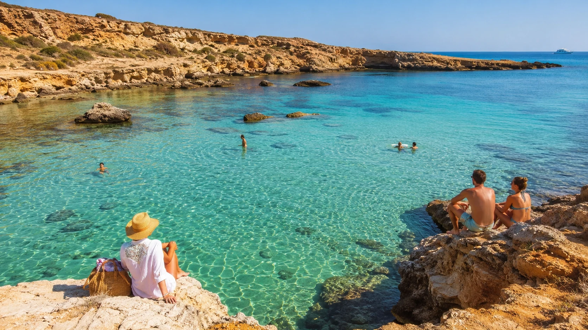
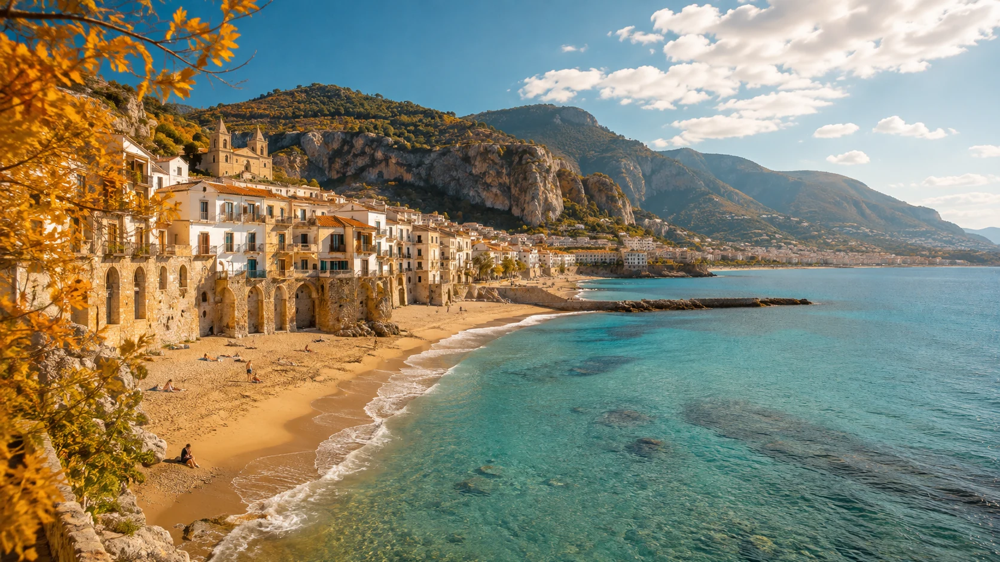
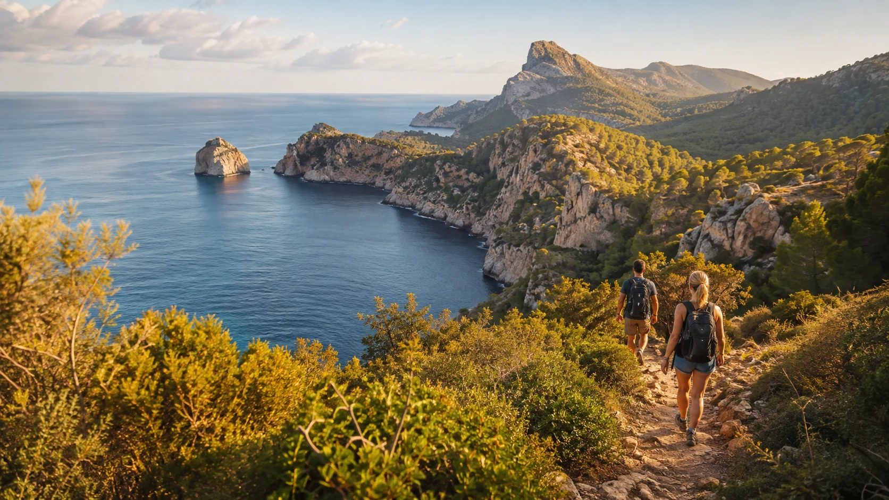
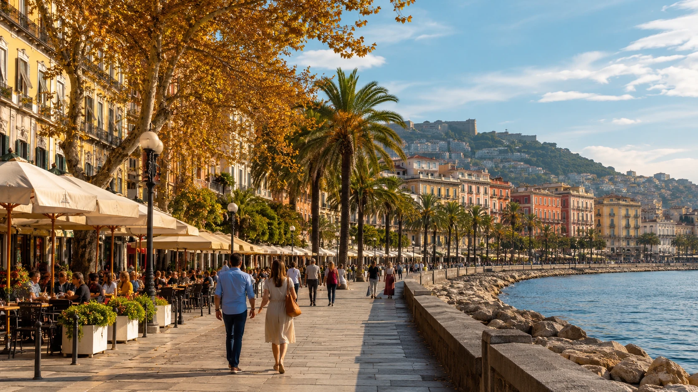

31. augusta sa Stredomorie nezatvára. Na Cypre môže byť október stále príjemný na kúpanie, na Sicílii sa dá pláž skombinovať s výletmi a na Mallorce práve jeseň otvára obdobie, keď sú horské chodníky príjemnejšie než rozpálené pobrežie.
Lenže jeseň má jeden háčik: nie všade sa zo Slovenska lieta rovnako dlho. Niektoré grécke ostrovy zmiznú z letových poriadkov už v septembri, iné destinácie vydržia do októbra a časť spojení z Bratislavy či Košíc pokračuje aj v zime.
Preto sme sa pozreli na jesenné priame spojenia z Bratislavy a Košíc do krajín, ktoré nájdete na Letom po Stredomorí: Talianska, Španielska, Cypru, Grécka, Chorvátska, Francúzska a Malty. Slovinsko v aktuálnom jesennom leteckom výbere priame spojenie z Bratislavy ani Košíc na pobrežie nemá.
September? V mnohých miestach je to stále leto
Ak môžete cestovať v septembri, otázka „kúpanie alebo turistika?“ je na veľkej časti Stredomoria skoro zbytočná. More má za sebou celé horúce leto a chladne pomalšie než vzduch.
Cyprus, Kréta, Rodos, Zakynthos, Mallorca, Malta, Sicília, Kalábria, Sardínia či Zadar stále dokážu ponúknuť veľmi príjemné podmienky na kúpanie. Rozdiel oproti júlu a augustu je skôr v tom, čo získate navyše: menej úmornej horúčavy pri výletoch, príjemnejšie večery a postupne menej ľudí.
V septembri by som balil plavky aj turistické topánky.

Október? Možno najzaujímavejší mesiac jesene
Október už Stredomorie rozdelí. Na Cypre a Malte sa stále oplatí počítať s morom. Na Sicílii, v Kalábrii alebo pri Aténach môže jeden deň patriť pláži a ďalší túre či roadtripu.
Na Mallorce, Sardínii alebo Korfu už treba viac sledovať konkrétnu predpoveď, no práve vtedy vznikajú dovolenky, ktoré by v auguste mohli byť kvôli horúčave únavné.
November? Stredomorie nekončí, iba mení charakter
V novembri už nemožno kúpanie rozumne garantovať. Aj na juhu môže prísť dážď, vietor alebo niekoľko chladnejších dní. To však ešte neznamená koniec cestovania.
Pafos, Malta, Málaga, Alicante, Sicília či Atény môžu byť veľmi príjemné na výlety. Neapol, Bari alebo Rím sú zase destinácie, kde chladnejšie počasie môže byť skôr výhodou.
Namiesto sedemdňovej dovolenky na lehátku vznikne niečo iné: more, pobrežné chodníky, mestá, jedlo, príroda a minimum letných horúčav.
Kam sa na jeseň 2026 lieta priamo zo Slovenska?
V tabuľke sú destinácie spomenuté v článku. Pri sezónnych linkách uvádzame posledný aktuálne zverejnený jesenný termín; pri linkách, ktoré pokračujú v zimnom poriadku, uvádzame „pokračuje aj v zime“.
| Destinácia | Bratislava | Košice | Na čo sa hodí jeseň |
|---|---|---|---|
| Alicante | pokračuje aj v zime | — | september ešte more, neskôr viac výlety |
| Barcelona | pokračuje aj v zime | — | mesto + september ešte aj pláž |
| Málaga | pokračuje aj v zime | celoročne | slnko, pobrežie a aktívne výlety |
| Mallorca | do 24. 10. | do 23. 9. | september more, október pláž + turistika |
| Alghero | do 24. 10. | — | Sardínia: pláže, Capo Caccia a výlety |
| Bari | pokračuje aj v zime | — | Apúlia, mestá, pobrežie a jedlo |
| Lamezia Terme | pokračuje aj v zime | — | Kalábria, Tropea, Capo Vaticano |
| Neapol | pokračuje aj v zime | — | Pompeje, Vezuv, mesto a pobrežie |
| Palermo | pokračuje aj v zime | — | Sicília: more + mesto + výlety |
| Trapani | pokračuje aj v zime | — | San Vito Lo Capo, Zingaro, Erice |
| Pisa | do 24. 10. | — | Toskánsko skôr na poznávanie |
| Rím | pokračuje aj v zime | pokračuje aj v zime | mestská jeseň bez letných horúčav |
| Atény | pokračujú aj v zime | — | mesto + Aténska riviéra |
| Korfu | do 23. 10. | — | október už premenlivejší, výborné výlety |
| Kréta – Heraklion | do 4. 10. | do 26. 9. | teplé more + turistika |
| Mykonos | do 23. 10. | — | pokojnejšia ostrovná jeseň |
| Rodos | do 25. 9. | do 22. 9. | stále veľmi letný september |
| Skiathos | do 29. 9. | — | ostrovný záver sezóny |
| Solún | pokračuje aj v zime | — | mesto, jedlo a severné Grécko |
| Zakynthos | do 21. 9. | do 21. 9. | letný september, potom koniec spojenia |
| Araxos / Patras | — | do 16. 9. | skorší záver charterovej sezóny |
| Larnaka | do 21. 10. | do 24. 9. | jeden z najsilnejších tipov na jesenné more |
| Pafos | pokračuje aj v zime | — | Cyprus aj pre neskorú jeseň |
| Malta | pokračuje aj v zime | — | more, mestá, útesy a výlety |
| Zadar | do 28. 9. | do konca septembra | Jadran na záver sezóny |
| Nice | do 24. 10. | — | Azúrové pobrežie, promenády a výlety |
Stav letových údajov pri príprave článku: 3. 9. 2026. Letové poriadky, najmä charterové a sezónne rotácie, sa môžu meniť. Pred rezerváciou vždy skontrolujte konkrétny termín na stránke letiska alebo dopravcu.
Cyprus: ak chcete jeseň ešte premeniť na leto
Ak by sme mali z celej ponuky vybrať jednu oblasť, kde má kúpanie najväčšiu šancu vydržať hlboko do jesene, Cyprus by bol veľmi vysoko.
September býva stále letný a v októbri sa dá výborne spojiť more s výletmi. Larnaka navyše nie je iba mestská pláž: smerom na Ayia Napu, Nissi Beach, Protaras a Cape Greco vzniká kombinácia zátok, vyhliadok a pobrežných chodníkov.
Pafos má veľkú výhodu v tom, že z Bratislavy pokračuje aj v zimnom programe. Okrem mora ponúka pobrežie, archeologické lokality a výlety smerom k polostrovu Akamas.
Jesenný verdikt: september = more, október = skvelý mix, november = skôr výlety s možným kúpaním navyše.
Malta: jedna z najuniverzálnejších jesenných možností
Malta je presne tá destinácia, kde sa dovolenka nepokazí len preto, že jeden deň nie je na pláž. Valletta, Mdina, Dingli Cliffs, Gozo, zátoky a pobrežné chodníky dávajú zmysel aj mimo hlavnej sezóny.
Október môže byť na Malte jeden z najlepších mesiacov roka, ak nechcete iba ležať na pláži.
Grécko: v septembri obrovský výber, potom sa dvere zatvárajú
Pri Grécku je najlepšie vidieť rozdiel medzi počasím a leteckou sezónou. Rodos, Zakynthos či Kréta môžu mať stále pekné podmienky, no priame lety sa končia pomerne skoro.
Kréta je na jeseň zaujímavá aj na rokliny a horské výlety. Korfu vydrží z Bratislavy až do druhej polovice októbra, no západ Grécka býva premenlivejší a dažďovejší. Mykonos v októbri zase ukáže pokojnejšiu tvár ostrova.
Atény a Solún sú univerzálnejšie: obe destinácie z Bratislavy pokračujú aj v zime. Atény navyše ponúkajú výbornú kombináciu mesta, Aténskej riviéry a výletu k mysu Sounion.
Taliansko: od sardínskych pláží až po novembrový Neapol
Taliansko má z Bratislavy na jeseň jednu z najbohatších ponúk. Na jednej strane Sardínia a Sicília, na druhej Neapol, Bari, Pisa a Rím.
Alghero: september pláž, október roadtrip
September môže byť stále klasickou dovolenkou pri mori. V októbri už väčší zmysel dostávajú Capo Caccia, Porto Conte, pobrežné túry a výlety autom.
Palermo a Trapani: Sicília patrí medzi najlepšie jesenné kompromisy
Z Palerma máte Mondello, Cefalù či Monte Pellegrino. Zo západu ostrova sa otvárajú San Vito Lo Capo, rezervácia Zingaro, Erice a pobrežie okolo Trapani. Keď nie je deň na pláž, dovolenka pokračuje.
Kalábria: pristáť v Lamezii a nezostať v Lamezii
Hlavným lákadlom je pobrežie smerom na Tropeu a Capo Vaticano. September je ešte plážový, október môže byť výborný na kombináciu mora a auta a v novembri rastie hodnota dediniek a vnútrozemia.
Neapol, Bari, Pisa a Rím
Tu sa otázka „plavky alebo turistické topánky?“ posúva viac k poznávaniu. Neapol má okolo seba Pompeje, Vezuv, Sorrento a Amalfitanské pobrežie. Bari otvára Apúliu a Rím je presne mesto, ktoré môže byť na jeseň príjemnejšie než v lete.

Španielsko: Málaga z oboch koncov Slovenska
Španielsko má jednu veľkú praktickú výhodu: Málaga je dostupná priamo z Bratislavy aj Košíc a z Košíc ide o celoročné spojenie.
Jeseň na Costa del Sol nemusí byť iba o kúpaní. Caminito del Rey, Nerja, Frigiliana, Málaga a výlety do vnútrozemia Andalúzie dávajú na jeseň omnoho väčší zmysel než uprostred najväčších letných horúčav.
Mallorca
V septembri stále pôsobí letne. V októbri sa čoraz viac otvára priestor pre Serra de Tramuntana, Sóller, Deià, Valldemossu a horské cesty. V septembri plavky. V októbri plavky aj turistické topánky.
Barcelona a Alicante
Barcelona je výborná na mesto s prímesou mora, najmä na začiatku jesene. Alicante ponúka viac južného slnka a dobrú základňu na výlety po Costa Blanca.

Zadar: posledná šanca na Jadran lietadlom
September môže na Jadrane stále ponúknuť príjemné kúpanie. Zadar má navyše poistku pre horší plážový deň: Paklenica, Velebit, ostrovy, staré mesto a výlety pozdĺž pobrežia.
Nice: Riviéra bez augustových horúčav
September ešte môže byť kombináciou Azúrového pobrežia a kúpania. V októbri viac vyniknú Nice, Èze, Menton, Antibes, pobrežné chodníky a kopce nad Riviérou.
A čo Slovinsko?
Slovinsko na Letom po Stredomorí patrí, ale v aktuálnom jesennom poriadku nemá priamu linku z Bratislavy ani Košíc na slovinské pobrežie. Piran a Portorož preto do tabuľky priamych leteckých možností nezaraďujeme.

Kde by som na jeseň hľadal čo?
- Hlavne kúpanie: v septembri Cyprus, Malta, Kréta, Rodos, Sicília či Mallorca.
- More aj výlety: v októbri Cyprus, Malta, Sicília, Kalábria, Atény, Alghero a Mallorca.
- Turistika a príroda: Mallorca, Sardínia, Kréta, Korfu, Kalábria a okolie Neapola.
- Mestá a jedlo: Neapol, Palermo, Atény, Barcelona, Bari, Rím a Malta.
- Neskorá jeseň: Málaga, Alicante, Pafos, Malta, Palermo, Trapani, Neapol, Atény a ďalšie zimné linky.
Takže kúpanie alebo turistika?
Možno je nesprávna už samotná otázka. September v Stredomorí je často stále leto. Október je obdobím, keď nemusíte medzi morom a výletmi vyberať. A november ukazuje Stredomorie, ktoré počas hlavnej sezóny veľa dovolenkárov vôbec nespozná.
Bez rozpálených ulíc. Bez potreby tráviť celý deň pod slnečníkom. S väčším priestorom na mestá, prírodu, pobrežné trasy, jedlo a spontánne zastávky.
A plavky? Na juh Stredomoria by som ich do kufra stále pribalil. Zaberú málo miesta a jeseň pri mori dokáže príjemne prekvapiť.
Zdroje a overenie letov
Letové údaje boli pri príprave článku kontrolované podľa aktuálne zverejnených poriadkov Letiska Bratislava a Letiska Košice a podľa oznámení o zimnom letovom poriadku 2026/27.
- Letisko Bratislava – letový poriadok leto 2026
- Letisko Bratislava – oficiálny web
- Letisko Košice – letový poriadok
- Letisko Košice – oficiálny web
Charakter počasia v článku je všeobecný klimatický prehľad, nie predpoveď konkrétneho pobytu. Pred cestou vždy skontrolujte aktuálne počasie, teplotu mora, vietor a konkrétny let.